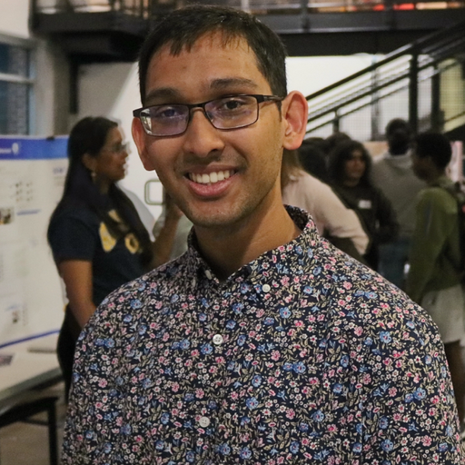

Hi, I'm Samrat
Hello! I’m Samrat, a recent graduate from the Georgia Institute of Technology, where I studied computer science with concentrations in artificial intelligence and low-level systems. I’m currently pursuing a Masters in Computer Science at Stanford University, focusing on artificial intelligence. I’m especially interested in research, particularly in reinforcement learning and its applications to embodied intelligence. In the past, my interests have spanned blockchains, federated learning, and economics.
If you’d like to learn more about my past experience, you can find my resume here.
I’m currently working on:
- Generative Offline Exploration: Using decision transformers and world models for sample efficient offline reinforcement learning
- Policy Distillation for Partially Observable Auxiliary Tasks
Projects I've Finished
- Exploration Critique Networks: Guiding Reinforcement Learning Exploration using Transformers
- Scatter Protocol: An Incentivized and Trustless Protocol for Decentralized Federated Learning - Accepted to IEEE International Conference on Blockchain
- Roboflow Python Package: Interface with Roboflow API in Python – my most popular project with 500,000+ monthly downloads!
- Bits of Good Analytics Platform: The unified analytics platform for Bits of Good
Reach out to me:
- Github: https://github.com/SamratSahoo
- LinkedIn: https://www.linkedin.com/in/samratsahoo/
- Email: samrat (at) stanford (dot) edu
Oh, and this is what I look like
